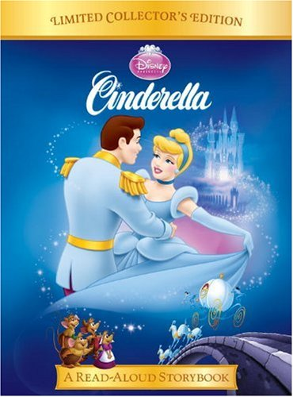

MY FAVOURITE HOBBIES
My Favourite Hobbies are Reading Story Books and Drawing.
Cinderella Story Book

The Nature Drawing
Peacock is the national bird of India. They are large, colorful pheasants (typically blue and green) known for their iridescent tails. These tail feathers, or coverts, spread out in a distinctive train that is more than 60 percent of the bird's total body length and boast colorful "eye" markings of blue, gold, red, and other hues. Sometimes peacocks do escape. Which was remarkable, Webster said, because, in general, peacocks are not very smart.Peacocks can (sort of) fly they tend to run and take several small leaps before a big final hop. They can't stay airborne for very long, but their huge wingspan allows them to flutter quite far.
Male peacocks display their flashy trains and beautiful blue-green plumage to attract the peahens. They perform a peculiar dance to fascinate the females. You can find them prancing around the peahens to attract them. Trade of naturally shed peacock feathers is allowed under the Wildlife Protection Act, 1972, which although prohibits killing of the bird. The loophole in the law has been misused and had lead to rampant killing of the bird across India for highly lucrative feather business.
Cinderella Story Book
The Nature Drawing
Drawing is a form of visual art in which one uses various drawing instruments to mark paper or another two-dimensional medium. It is one of the simplest and most efficient means of communicating visual ideas. The wide availability of drawing instruments makes drawing one of the most common artistic activities.
Cinderella, aided by her kind Fairy Godmother and equipped with a beautiful silver gown and a unique pair of glass slippers, attends, only to have to leave at midnight when the Fairy Godmother's spell is broken.
See video here :
Drawing is a form of visual art in which an artist uses instruments to mark paper or other two-dimensional surface. Drawing instruments include graphite pencils, pen and ink, various kinds of paints, inked brushes, colored pencils, crayons, charcoal, chalk, pastels, erasers, markers, styluses, and metals (such as silverpoint).
Digital drawing is the act of using a computer to draw. Common methods of digital drawing include a stylus or finger on a touchscreen device, stylus- or finger-to-touchpad, or in some cases, a mouse. There are many digital art programs and devices.
See video here :